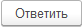

Данная форма представляет собой рабочее место для работы с письмами, которыми можно обмениваться с банком.
Слева вверху находится дерево навигации для быстрого перехода между письмами в различных состояниях и направлении.
Внизу слева расположены поля для быстрого отбора писем по значениям реквизитов.
Назначение команд:
- создать новое письмо и отравить в банк.
 - ответить на текущее письмо.
- отправить подготовленные письма в банк, получить статусы писем, получить новые письма из банка.
- распечатать выделенные письма